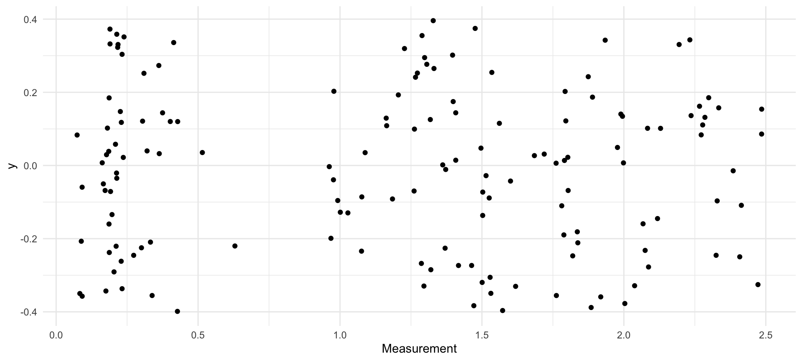
Simple Linear Regression and Introduction to Modeling
SDS 320E
Introduction to Modeling
What is modeling?
- Modeling is the process of creating a more simple representation of a system, process, or relationship
- A model refers to the specific representation created
- Can be a written or verbal description
- Can be a visual representation
- Can be a mathematical equation or a spreadsheet
Examples of Models
Examples of Models Cont.

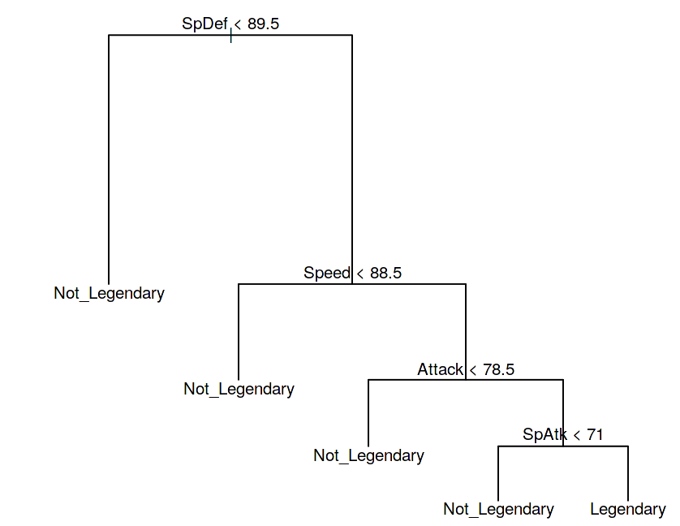
or a simple model
\[ \ldots y = 5x + 2 \]
Definitions for Modeling
- Dependent/Response Variable is the variable or outcome of interest the model is trying to predict. Usually denoted by \(Y\).
- Ex: Cancer, Predicting Stock Price, Flower Species (Iris), Pokemon Type, ect.
- Independent/Predictor Variable is the variable we are using to predict the dependent/response variable. Usually denoted by \(X\)
- Ex: DNA sequences, Financial Measures, Petal Length, Pokemon Stats, ect
- Traditionally, modeling falls into one of two categories:
- Supervised Learning: Both the the response/variable \(Y\) and predictor/independent variable \(X\) are known. i.e. we have data for \(X\) and \(Y\)
- Unsupervised Learning: Only the predictor/independent variable \(X\) is known. i.e. only have data for \(X\)
Unsupervised Modeling and Cluster Analysis
Unsupervised Modeling
- Unsupervised learning is primarily associated with cluster analysis
- Cluster Analysis: organize observations into similar groups based on recorded characteristics/variables
- Common use cases
- Cell type identification grouping cells with similar gene expression in single-cell RNA-seq data
- Market segmentation grouping customers with similar purchasing behavior and demographics to target marketing campaigns
- Outliar detection flagging unusual lab values or measurements that may indicate errors or unusual cases
- Drug repurposing grouping drugs with similar treatment response profiles to suggest candidates for new conditions
Cluster Analysis
Example
Consider this dataset with the one measurement on the x-axis. Can we identify any clusters, i.e. any obvious grouping of data?
- These are obvious clusters, but what about sub-clusters?
Cluster Analysis Cont.
- We could change the number of clusters we suspect and get different results
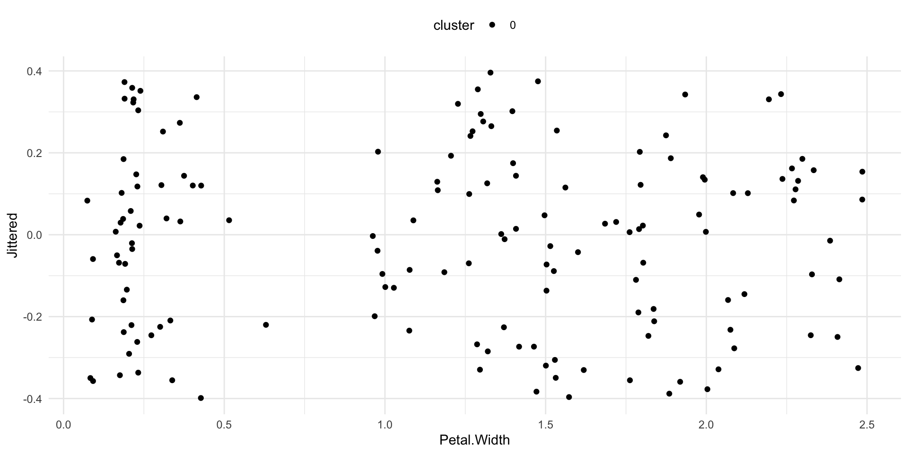
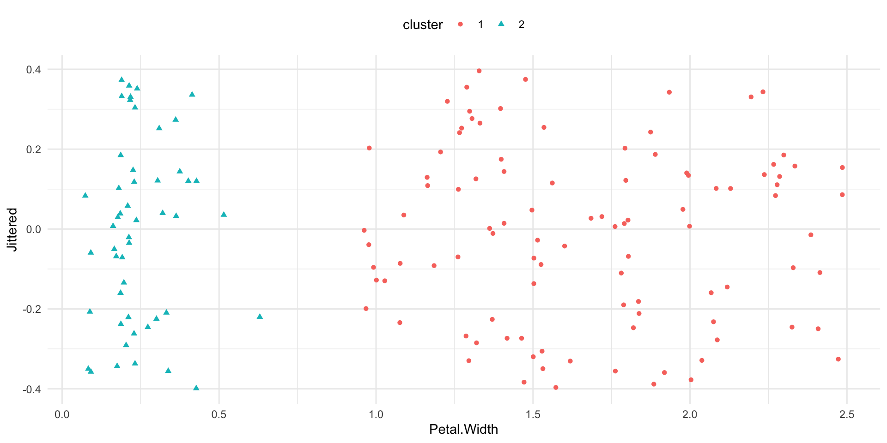
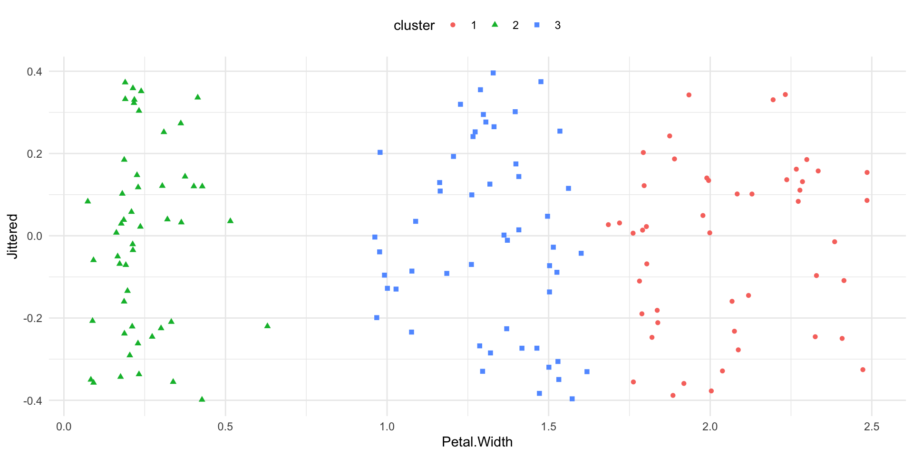
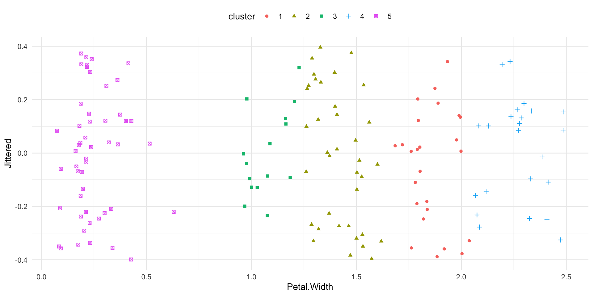
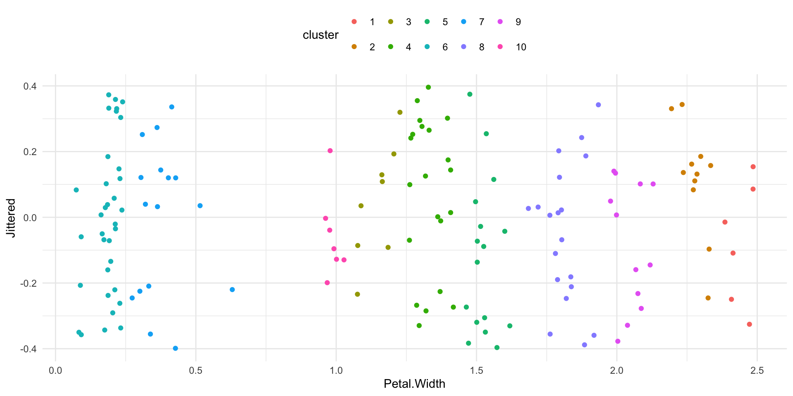
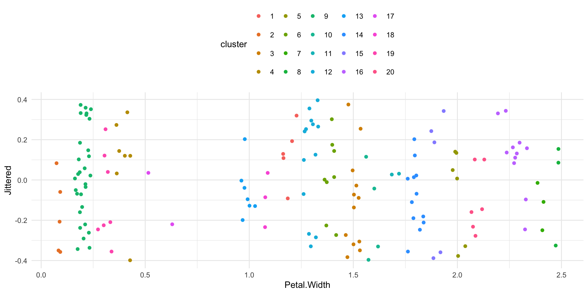
How Cluster Analysis Works
- Goal: organize observations into similar groups based on recorded characteristics/variables
- Clustering algorithms require two things:
- A way to measure distance between observations
- A rule for grouping observations that are “close” to one another
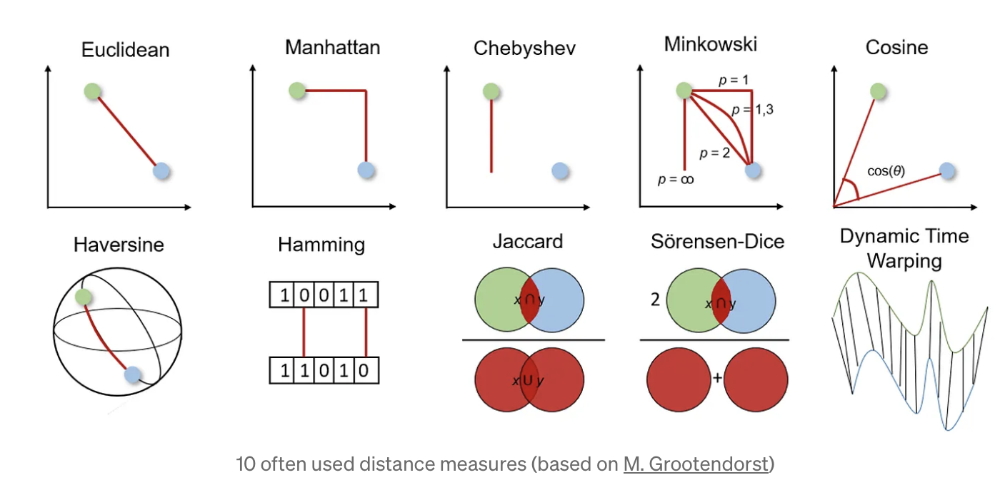
The rest of cluster analysis is a bit beyond this course, but it is essential to know the difference between unsupervised vs supervised models.
Supervised Modeling
Supervised Modeling Basics
- The most common modeling practiced is supervised modeling/learning
Reminder
Supervised modeling is when we are trying to predict \(Y\) based upon \(X\), where both \(Y\) and \(X\) are known.
- We can represent the model by \(f\). Thus, \(Y\) is a function of \(X\), where \(f\) is the function/model \[ Y = f(X) \]
- Examples:
- \(f(X) = 2X + 5\) or \(f(X) = X^{2} + 3\)
- \(f(X)\) could be a decision tree that splits data by conditions like “income > 50K” or “age < 30.”
- Our goal in modeling is to estimate \(f\), so we can predict \(Y\)
An Aside: Supervised vs Unsupervised for AI
- AI is just a specific model, \(f(\mathbf{X})\), based upon the following
Thought?
Do we think AI is a supervised or unsupervised modeling technique?
Pure Mathematical Relationships
- \(f(X) = 2X + 5\) and \(f(X) = X^{2} + 3\) are examples of pure mathematical examples
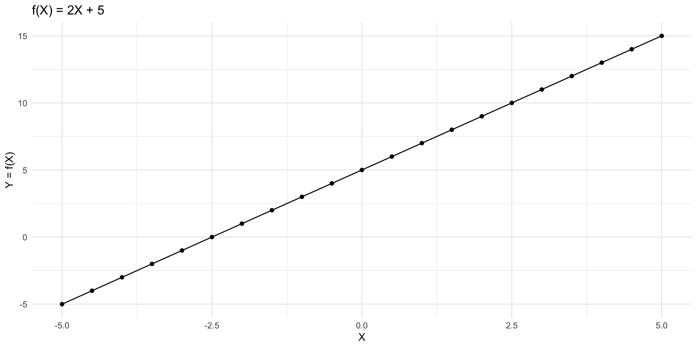
Mathematical Relationships Cont.
- With real data, the relationship is rarely purely mathemtical and often has some for of error \(\varepsilon\). \[ Y = f(X) + \varepsilon \]
Simple Linear Regression
Regression Basics
- Regression is a supervised statistical method used to model relationships between variables that can be used for
- Describing the relationship between variables
- Predicting outcomes for new observations
- There are multiple types of regression including:
- Simple Linear Regression: one predictor, one response; relationship assumed linear
- Multiple Linear Regression: several predictors combined linearly
- Logistic Regression: models binary outcomes using a logistic function
- Nonlinear Regression: assumes a specific nonlinear functional form for the relationship
- and much more…
Introduction to Simple Linear Regression
- Here, we will focus on simple linear regression where,
- We have one independent/predictor variable \(X\)
- We have one dependent/response variable \(Y\)
- And we assume a linear relationship between \(X\) and \(Y\)
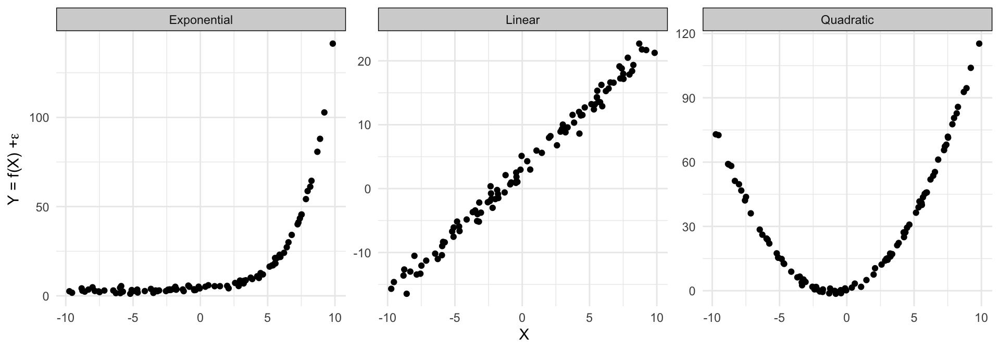
Introduction to Simple Linear Regression Cont.
- One subtly about regression is we are not modeling each exact value of \(Y\), but we are modeling the expected value of \(Y\).
- Expected Value is denoted \(E(Y) = \mu_{y}\) i.e. the average value of \(Y\).
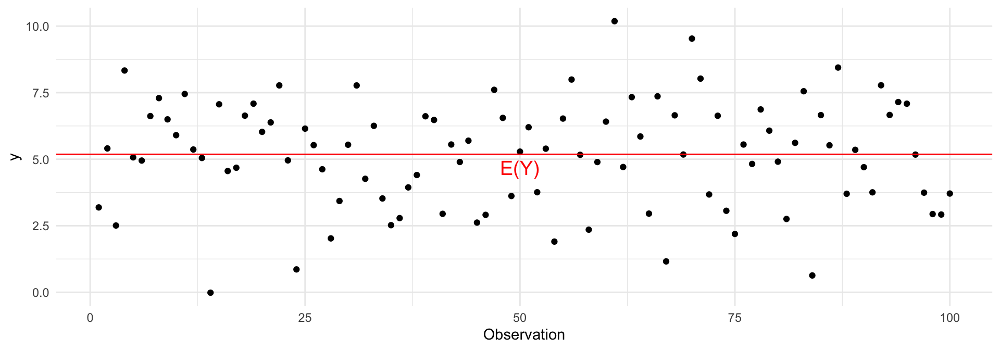
- No matter what, we always predict \(Y\) as \(E(Y) \approx 5\) in this example.
Introduction to Simple Linear Regression Cont.
- Regression improves the estimation of the expected value of \(Y\) by considering \(X\). That is, we have \(E(Y|X) = \mu_{Y|X}\)
- Thus, for simple linear regression we assume this expectation is linear such that \[E(Y|X) = \beta_{0} + \beta_{1}X \]
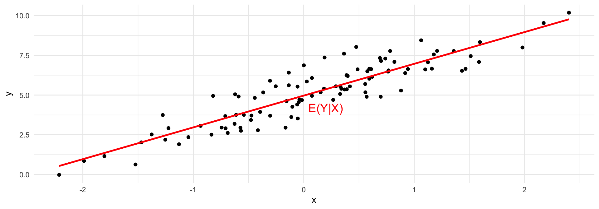
- Now, we can improve our prediction of \(Y\) by considering \(X\). For example, \(E(Y|X = 0) \approx 5\) or \(E(Y|X = 1) \approx 7\).
Simple Linear Regression Formalized
Simple Linear Regression Model
The model for simple linear regression is given by
\[ Y = \beta_{0} + \beta_{1}X + \varepsilon, \]
where:
- \(\beta_{0}\) represents the population intercept
- \(\beta_{1}\) represents the population slope
- \(\varepsilon\) represents the random error
Interpretations:
- \(\beta_{0}\) is the average value of \(Y\) when \(X = 0\) only interpretable if x = 0 is in the scope of the model.
- \(\beta_{1}\) is the average change in \(Y\) for a one unit increase in X
- \(\varepsilon\) is the “random error” associated with each point
Simple Linear Regression Examples
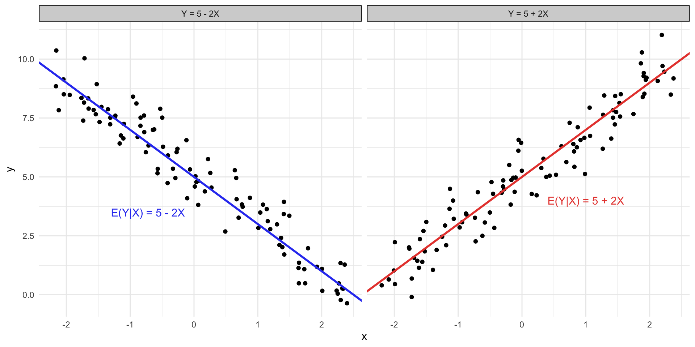
Solving the Simple Linear Regression Model
- For the past examples, we have assumed we knew what the model was Ex: \(Y = 5 + 2X + \varepsilon\)
- However, in practice, we are just given the data and have to solve for the model our self.
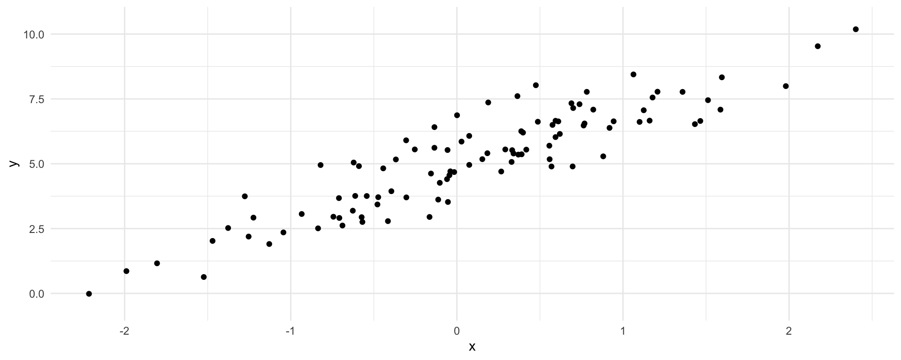
\[ Y = ? + ??X + \varepsilon \]
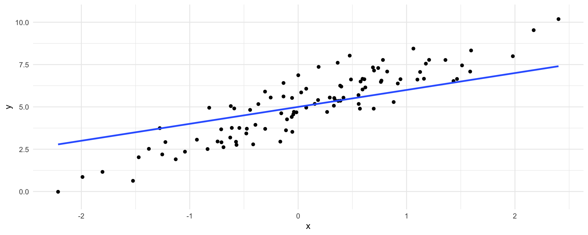
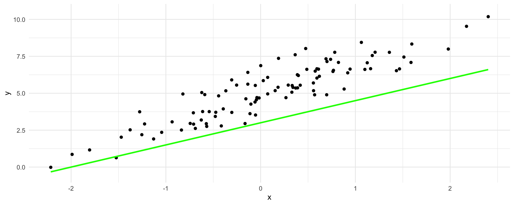
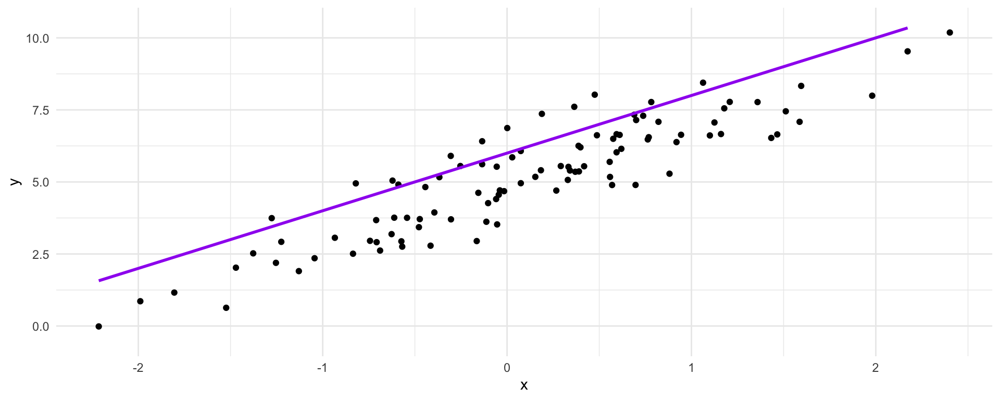
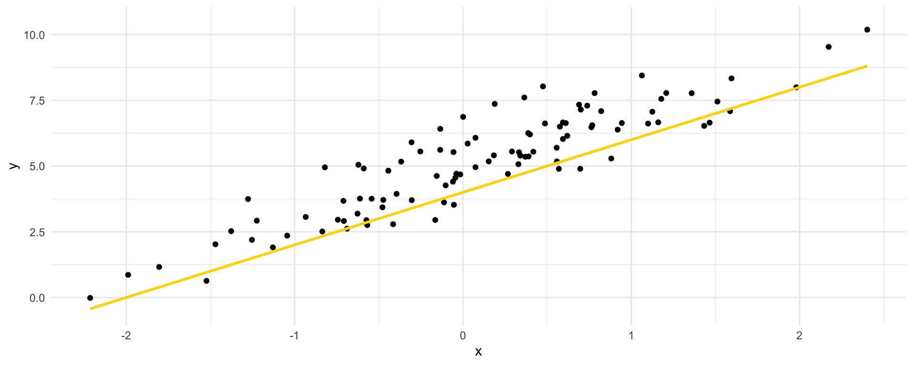
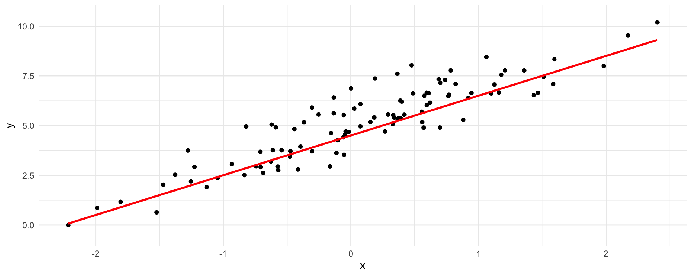
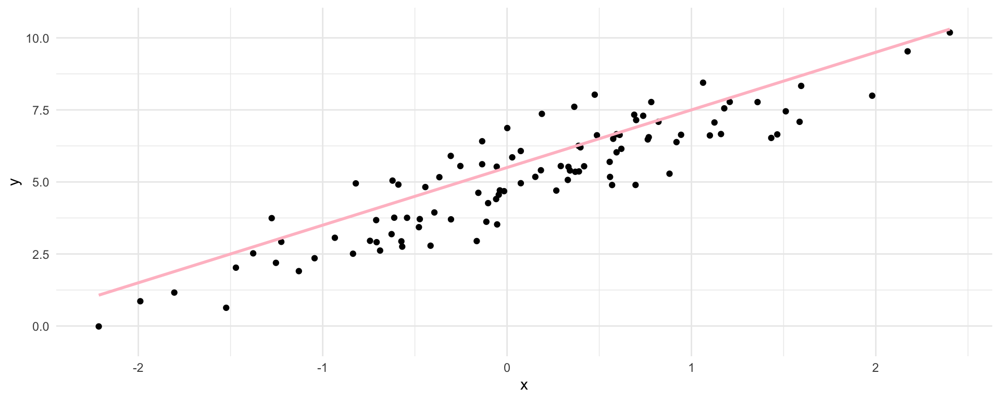
Which one is the best fit??
Residuals
To solve for the best model, we use residuals. Here are some definitions to help:
- Observed values: the known values of X and Y (our data). Coordinates:\((X, Y)\)
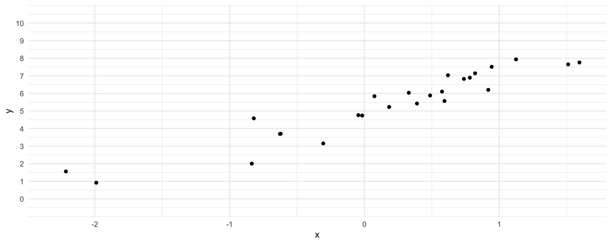
\((X, Y) = (-0.83, 2.01)\)
- Predicted values: the \(Y\) values that are predicted by the regression equation and denoted \(\widehat{Y}\). Coordinates: \((X, \widehat{Y})\).
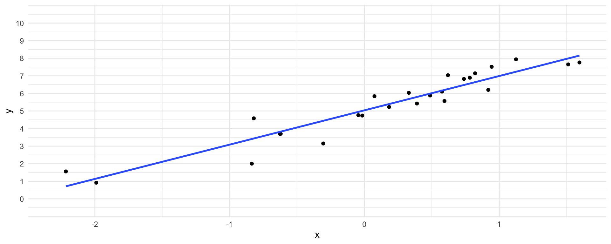
\((X, Y) = (-0.83, 2.01)\)
\((X, \widehat{Y}) = (-0.83, 3.43)\)
- Residuals: the difference between the observed and predicted values of the response i.e. \(Y - \widehat{Y}\)
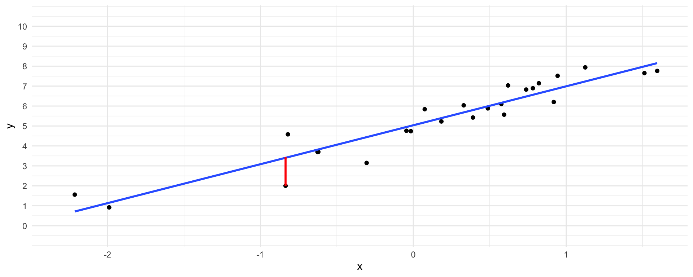
\((X, Y) = (-0.83, 2.01)\)
\((X, \widehat{Y}) = (-0.83, 3.43)\)
\(Y - \widehat{Y} = 2.01 - 3.43 = -1.42\)
Residuals Cont.
Reminder
Residuals are the difference between the observed and predicted values.
- Would we want our model to produce smaller or larger residual magnitudes?
Example
Suppose we have 3 models. Which model do we think gives the best fit?
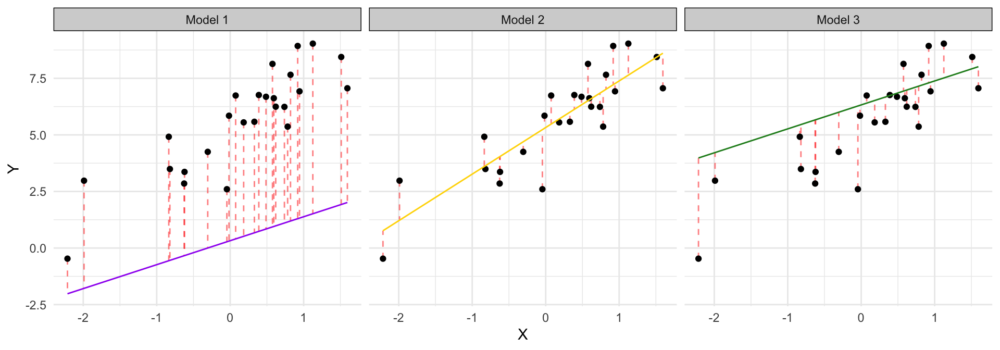
Model 2 because on average its residuals are smaller than the other models.
Line of Best Fit
- Thus, we use the residuals to find the “line of best fit’’.
- Specifically, we choose the line that minimizes the sum of squared residuals (SSR) \[ SSR = \sum_{i = 1}^{N}(Y_{i} - \widehat{Y}_{i})^{2} \]
- Finding the slope and intercept that minimizes SSR requires calculus… \[ \begin{align*} \frac{\partial SSR}{\partial \beta_0} &= -2 \sum (Y_i - \beta_0 - \beta_1 X_i) = 0 \\ \frac{\partial SSR}{\partial \beta_1} &= -2 \sum X_i (Y_i - \beta_0 - \beta_1 X_i) = 0 \end{align*} \]
- Solving this gives what is called the Ordinary Least Squares (OLS) solutions: \[ \beta_1 = \frac{\sum_{i=1}^n (X_i - \bar{X})(Y_i - \bar{Y})}{\sum_{i=1}^n (X_i - \bar{X})^2}, \text{ and} \quad \beta_0 = \bar{Y} - \widehat{\beta}_1 \bar{X}. \]
Simple Linear Regression in R
- Don’t worry, you do not have to do any of the calculus by hand or plug into the OLS solutions. R will do everything for you.
- To perform simple linear regression in R we use the
lm()function
Example
Consider modeling Sepal.Width by Petal.Length for the Iris dataset.
Sample Estimates for Simple Linear Regression
Sample Simple Linear Regression Model
In practice, we must estimate these parameters from our sample data which gives the sample simple linear regression model:
\[ \widehat{y} = \widehat{\beta}_{0} + \widehat{\beta}_{1}x, \]
where:
- \(\beta_{0}\) represents the sample intercept
- \(\beta_{1}\) represents the sample slope
- \(\widehat{y}\) represents the estimated mean of y (or predicted value of y)
Simple Linear Regression Income-Education Example
Example
Suppose UT Austin wants to predict average income from years of education for workforce planning in Central Texas. UT sampled 120 employed adults and records each person’s years of education and annual income (thousands of dollars). Using simple linear regression, we want develop a model to predict income from years of education.
| income | education |
|---|---|
| 15.00000 | 10.0 |
| 20.41452 | 10.5 |
| 16.96766 | 10.5 |
| 30.23333 | 11.0 |
| 25.59243 | 11.0 |
| 21.51244 | 11.5 |
- The predictor variable for this example is education
- The response variable for this example is income
Simple Linear Regression Income-Education Example Cont.
- Before we fit the simple linear regression model, we must ensure we have a linear relationship between education and income.
A linear relationship seems appropriate and we can continue with the model fitting
Simple Linear Regression Income-Education Example Cont.
- Now, we fit the simple linear regression model using
lm()and get the results.
- To write our model, do we use \(Y\) or \(\widehat{y}\)? \(\widehat{y}\) because we are dealing with sample data.
- Thus, from the
Routput, our model is given by
\(\widehat{y} = -28.897 + 4.778x,\) where \(x =\) years of education
Simple Linear Regression Income-Education Example Cont.
- Now, lets interpret our model: \(\widehat{y} = -28.897 + 4.778x\)
- Can we interpret the:
- sample intercept (-28.897) in this example? No! \(x = 0\) is not possible for this example.
- sample slope (4.778) in this example? Yes! On average, income increases by $4.78 thousand for each additional year of education.
Simple Linear Regression Marketing Example
Example
Suppose BUM energy , an energy-drink distributor, wants to predict monthly sales revenue from advertising expenditures. The company collects data from 80 regional markets, recording each market’s monthly advertising budget (in thousands of dollars) and total sales (in thousands of dollars). Using simple linear regression, we want develop a model to predict sales based on advertising spending.
| advertising | sales |
|---|---|
| 9.181314 | 37.07379 |
| 3.724352 | 27.43142 |
| 0.000000 | 19.37355 |
| 17.393817 | 49.51568 |
| 2.158873 | 24.36705 |
| 12.582281 | 39.17518 |
- The dependent variable for this example is sales
- The independent variable for this example is advertising
Simple Linear Regression Marketing Example Cont.
- Now, before we fit the simple linear regression model, we must ensure we have a linear relationship between advertising and sales.
- A linear relationship seems appropriate and we can continue with the model fitting.
Simple Linear Regression Marketing Example Cont.
- We fit the simple linear regression model using
lm()and get the results.
- Now, lets interpret our model: \(\widehat{y} = 20.058 + 1.705x\)
- Can we interpret the sample intercept in this example? Yes! The data contains regions with no advertising cost (i.e. x = 0 is a possible value). \(\widehat{\beta}_{0} = 20.058\) represents the average monthly sales(in thousands) when a region spends no money on advertising.
- Can we interpret the sample slope in this example? Yes! On average, monthly increases by approximately $1.705 thousand for each additional thousand dollars spent on advertising.
- Can we interpret the sample intercept in this example? Yes! The data contains regions with no advertising cost (i.e. x = 0 is a possible value). \(\widehat{\beta}_{0} = 20.058\) represents the average monthly sales(in thousands) when a region spends no money on advertising.
Prediction for Simple Linear Regression
Predicting with Simple Linear Regression
Reminder
Regression is a supervised statistical method used to model relationships between variables that can be used for:
- Describing the relationship between variables i.e. \(\beta_{0}\) and \(\beta_{1}\)
- Predicting outcomes for new observations
- We can predict the average value of \(Y\) given a specific realized \(x\) value i.e. \(E[Y|X = x] = \beta_{0} + \beta_{1}x\)
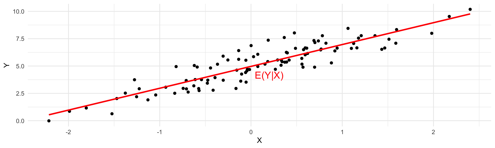
- Ex: \(E[Y|X = -1] = \beta_{0} + \beta_{1}\times (-1)\)
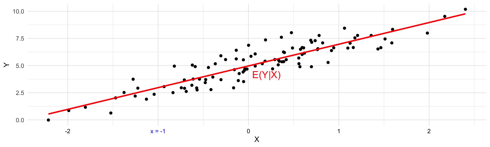
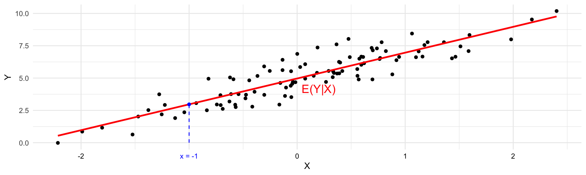
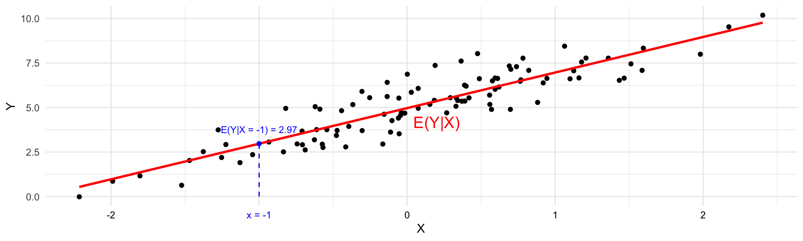
Predicting in R
- To predict with simple linear regression, we can just evaluate our new observation in our model i.e. \(\widehat{y} = \widehat{\beta}_{0} + \widehat{\beta}_{1}\cdot (x = \text{new value})\)
- To predict in \(\texttt{R}\), we can save our model with
lm()and then use thepredict()function. The arguments of interest are:object: the saved model fromlm()newdata: a data frame with the new value(s) of the predictor the column name must match the predictor’s name in the model
Example
Consider modeling Sepal.Width by Petal.Length for the Iris dataset.
Predicting for Education Example
Income Example Revisited
For the income and education example, we found the estimated OLS solution to be \[ \widehat{y} = -28.897 + 4.778x.\] Predict the income based upon 12 years of education.
From our linear model, \(\widehat{y} = -28.897 + 4.778(12) = 28.439\)
Or in \(\texttt{R}\), we can use the predict() function
- Interpretation: For 12 years of education, we expect, on average, the annual income for a random individual to be $28,439.
Predicting Issues: Extrapolation
- So far, we have not made any strong assumptions, but issues can still arise in prediction when your model does not have strong assumptions
- The most common issue in prediction is user error i.e. making improper predictions
- Extrapolation: using the model to estimate/predict y based upon values of x that are “outside” of the range of values in our dataset
- Only reasonable if we have good reason to believe a linear trend continues beyond the range of data values we have
- Almost always a bad idea!!
Extrapolation Example
Sales Example Revisited
For the sales and advertising example, we found the estimated OLS solution to be \[ \widehat{y} = 20.058 + 1.705x\]
i.e \(Sales = 20.058 + 1.705\cdot(advertising\ expense)\)
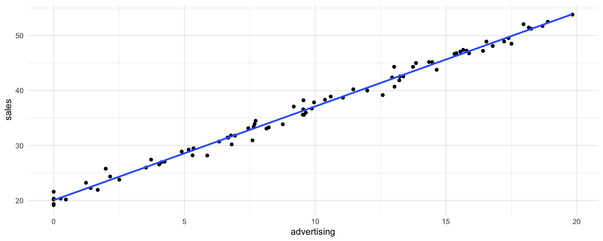
We only recorded advertising cost up to 20k, but is it possible to spend more? Of course!
Extrapolation Example Cont.
Do we know the relationship between advertising and sales past 20k?
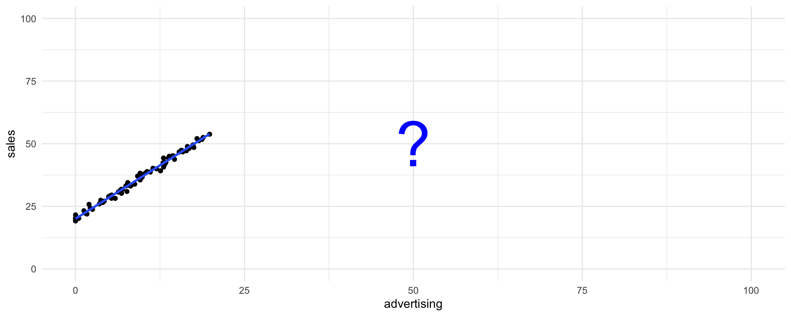
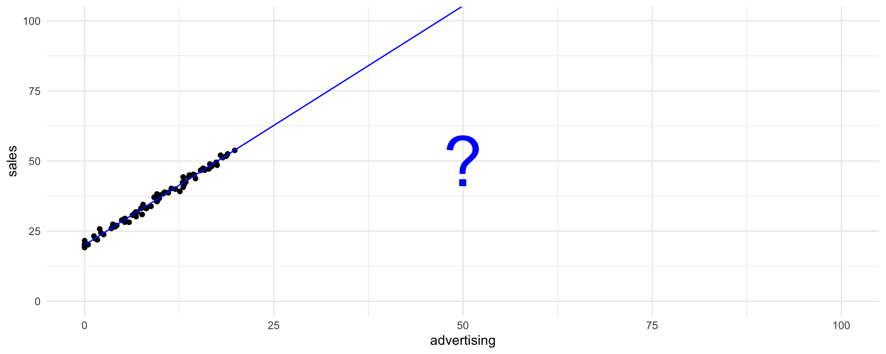
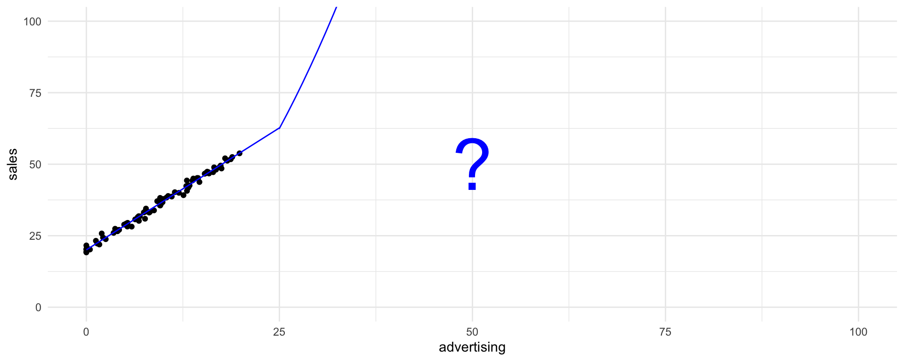
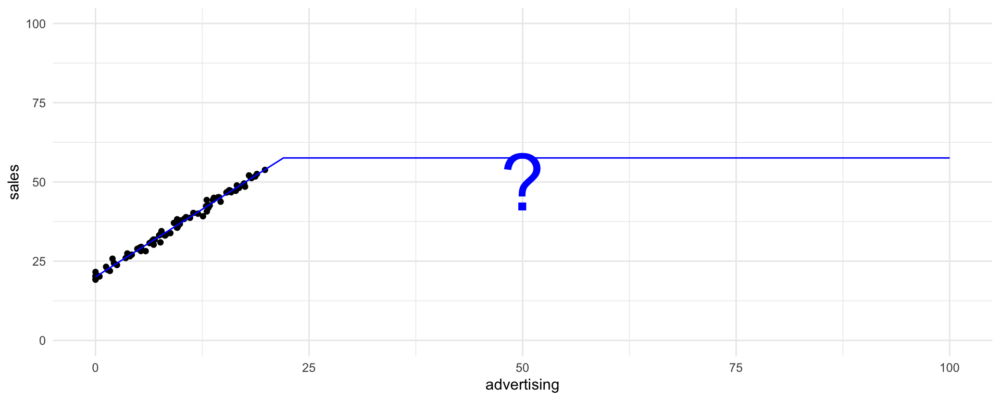
No! We don’t have data past $20k, so we don’t know what the relationship is in that region. Thus, we can NOT use our model past $20K.
Statistical Inference for Regression Models
Inference for Simple Linear Regression
- So far, we have not made any strong assumptions to predict. However, we often want to do more than predict and make inference on our parameters \(\beta_{0}\) and \(\beta_{1}\).
- Confidence intervals for \(\beta_{0}\) and \(\beta_{1}\).
- Hypothesis testing for \(\beta_{1}\) to determine if our predictor is significant
- To make inferences about our simple linear regression model \[ Y_{i} = \beta_{0} + \beta_{1}X_{i} + \varepsilon_{i}, \] we must make the following assumptions:
- 1.Linearity: There exists a linear relationship between X and Y check w/ scatterplot
- 2.Normality: The errors \(\varepsilon\) are normally distributed \(\varepsilon_{i} \sim N(0, \sigma^{2})\) check w/ QQ plot
- 3.Equal Variance: The errors \(\varepsilon\) all have the same variance \(\sigma^2\) check with plot of residuals
- 4.Independence: The errors \(\varepsilon\) are independent from on another. check with autocorrelation plot
The assumptions can be summarized as \(\varepsilon_{i} \stackrel{i.i.d.}{\sim} N(0, \sigma^{2})\). See the appendix for assessing theses assumptions
Hypothesis Testing for Slope Motivation
- If we have \(\beta_{1} = 0\), then what happens to \(Y\) as \(X\) increases?
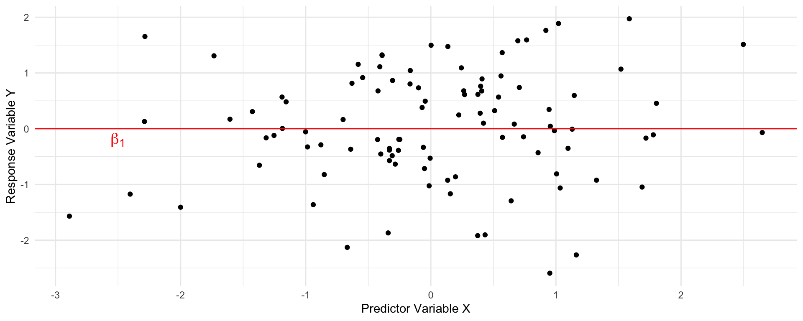
Anything can happen! Thus, we want to test whether the slope is statistically different from 0.
Hypothesis Testing for Slope
- Significant Predictor: We say a predictor variable is significant if the relationship between the predictor and response is unlikely to have occurred by random chance. That is, the slope (\(\beta_{1}\)) is statistically different from zero.
Hypothesis Test for \(\beta_{1}\)
Let \(\beta_{1}\) be the true slope of the linear relationship between a predictor \(X\) and a response \(Y\). Then, we can conduct a hypothesis test to determine whether \(X\) is a significant predictor for \(Y\): (\(\alpha\) is almost always set to 0.05):
Null and Alternative Hypothesis
\(H_0: \beta_{1} = 0\) i.e. there is no linear relationship between \(X\) and \(Y\)
\(H_{a}: \beta_{1} \neq 0\) i.e. there is a linear relationship between \(X\) and \(Y\)
Test-Statistic and Distribution
Because \(\widehat{\beta}_{1}\) is an average, then
\(t\) \(= \frac{\widehat{\beta}_{1} - 0}{SE(\widehat{\beta}_{1})}\) \(\sim t(df = n - 2)\)
Assumptions for the Test for the Slope
Assess the residuals
Hypothesis Test for the Slope in R
- To conduct the test in \(\texttt{R}\), we can save our model with
lm()and then use thesummary()function.
Example
Consider modeling Sepal.Width by Petal.Length for the Iris dataset.
Hypothesis Testing for Slope Example
Sales Example Revisited
For the Bum energy example, we are modeling monthly sales based upon monthly advertising expense, and we found the estimated model to be \[ \widehat{y} = 20.058 + 1.705x\]
Our sample slope is \(\widehat{\beta}_{1} = 1.705\), which is clearly different from 0. However, we want to know if this generalizes to the entire population. Thus, we want to perform a hypothesis test for \(\beta_{1}\).
Call:
lm(formula = sales ~ advertising, data = bum_energy)
Residuals:
Min 1Q Median 3Q Max
-2.33631 -0.55797 -0.05058 0.51025 2.33389
Coefficients:
Estimate Std. Error t value Pr(>|t|)
(Intercept) 20.0576 0.1986 101.01 <2e-16 ***
advertising 1.7051 0.0179 95.28 <2e-16 ***
---
Signif. codes: 0 '***' 0.001 '**' 0.01 '*' 0.05 '.' 0.1 ' ' 1
Residual standard error: 0.9061 on 78 degrees of freedom
Multiple R-squared: 0.9915, Adjusted R-squared: 0.9914
F-statistic: 9078 on 1 and 78 DF, p-value: < 2.2e-16- OLS Solution:
summarywill give us the OLS solution to our line \(\widehat{y} = 20.058 + 1.705x\).
- \(\beta_{1}\) Test: The p-value \(\approx 0 < \alpha = 0.05\). Thus we reject \(H_{0}\), and conclude that there is sufficient evidence that advertising cost is a significant predictor for sales.
Hypothesis Testing for Slope Example Cont.
- Lets return to this randomly generated data, where visually we think the slope may be close to zero. Now, we can fit the model and run the hypothesis test
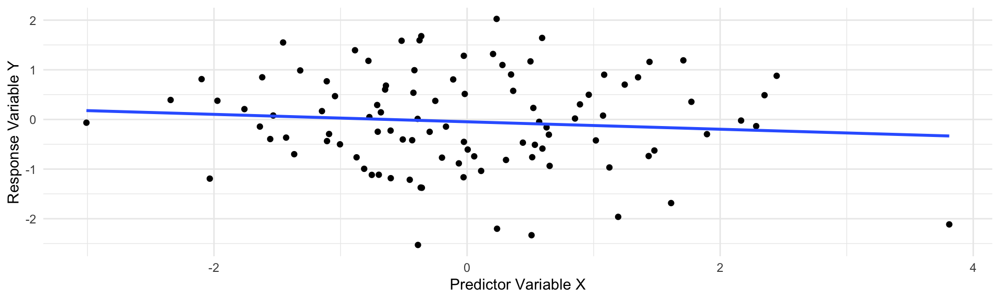
Call:
lm(formula = Y ~ X, data = data.frame(Y, X))
Residuals:
Min 1Q Median 3Q Max
-2.51014 -0.60549 0.02065 0.70483 2.08980
Coefficients:
Estimate Std. Error t value Pr(>|t|)
(Intercept) -0.04745 0.09676 -0.490 0.625
X -0.07495 0.08310 -0.902 0.369
Residual standard error: 0.9671 on 98 degrees of freedom
Multiple R-squared: 0.008232, Adjusted R-squared: -0.001888
F-statistic: 0.8134 on 1 and 98 DF, p-value: 0.3693- The p-value \(= 0.369 > \alpha = 0.05\). Thus, we fail to reject \(H_{0}\), and do not have sufficient evidence to conclude that \(\beta_{1}\) is different from 0.
- Therefore, \(X\) is not a significant predictor of \(Y\).
Confidence Interval for Regression Parameters
- Because \(\widehat{\beta}_{0}\) and \(\widehat{\beta_{1}}\) are averages and follow the \(t\) distribution, we can also construct confidence intervals for \(\beta_{0}\) and \(\beta_{1}\).
- Again, \(\texttt{R}\) will do all of the computation by using the
confint()function.
Sales Example Revisited
Consider our Bum energy example where we are modeling monthly sales based upon monthly advertising expense and we found the model to be \(\widehat{y} = 20.058 + 1.705x.\) We can use the confint function to get confidence intervals for \(\beta_{0}\) and \(\beta_{1}\).
\(\beta_{0}\) CI Interpretation: We are 95% confident that the true average monthly sales is between $19.66 and $20.45 thousand if there is no month advertising cost (i.e. 95% Confident that \(19.66 < \beta_{0} < 20.45\))
\(\beta_{1}\) CI Interpretation: We are 95% confident that the true average sales will increase between $1.67 and $1.74 thousand if we increase advertising expenditure by $1,000 (i.e. 95% Confident that \(1.67 < \beta_{1} < 1.74\))
Model Performance
Model Performance Motivation
Reminder
Reminder: If \(X\) is a significant predictor for \(Y\), this simply means that \(\beta_{1} \neq 0\).
- Thus, we still might want to know how “strong” of a predictor \(X\) is for \(Y\).
Example
Suppose we have two candidate predictor variables \(X_{1}\) and \(X_{2}\) for \(Y\). We fit two models for each predictor variable and find:
\(Y = 1.2 + 0.53X_{1}\) \(+\ \varepsilon\)
\(Y = 0.64 - 10X_{2}\) \(+\ \varepsilon\)
Which predictor variable is better?
We don’t know! The magnitude of the slopes is based upon the units of \(X\) and can NOT be constrasted.
Goodness of Fit and Coefficient of Determination
- To help determine what variables should be used in a model, others have proposed criteria/measures i.e. Model Selection Criteria
- Coefficient of Determination: Describes the percentage of the variation in the response variable (SSR) that can be explained by the linear relationship between the predictor(s) and the response.
- For simple linear regression \(R^{2}\) is the square of the correlation coefficient (\(r\)) between \(x\) and \(y\)
- Thus, we have \[ 0 \leq R^2 \leq 1 \]
- Interpretation: \(R^2\)% of the variation in \(Y\) can be explained by \(X\)
- We can compare \(R^2\) vales for \(X_1\) and \(X_2\) to determine which is a “better” predictor for \(Y\).
- The \(R^{2}\) is given by the
summary()output in \(\texttt{R}\)
Coefficient of Determination Visualized
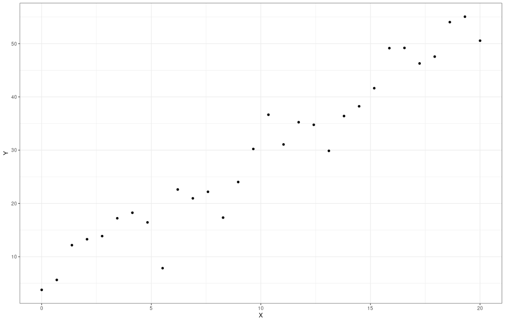
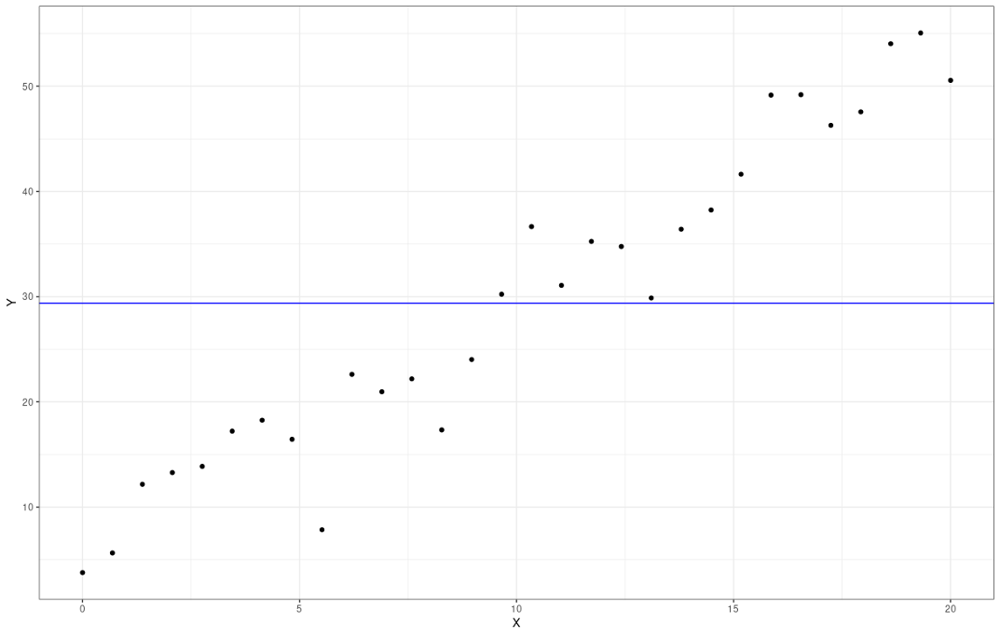
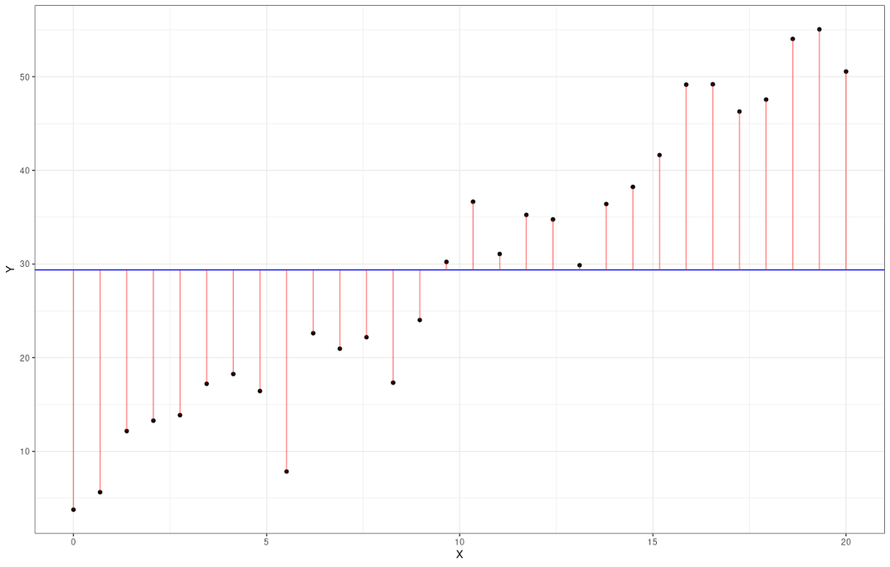
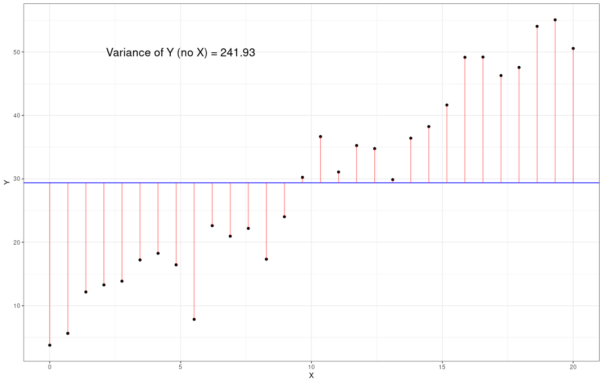
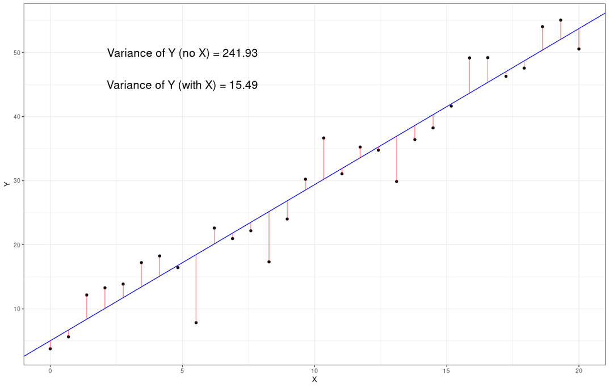
\(R^2 = 0.935\). Therefore, \(X\) explains 93.5% of the variability in \(Y\)
Coefficient of Determination Cont.
Sales Example Revisited
Consider our Bum energy example where we are modeling monthly sales based upon monthly advertising expense.
Call:
lm(formula = sales ~ advertising, data = bum_energy)
Residuals:
Min 1Q Median 3Q Max
-2.33631 -0.55797 -0.05058 0.51025 2.33389
Coefficients:
Estimate Std. Error t value Pr(>|t|)
(Intercept) 20.0576 0.1986 101.01 <2e-16 ***
advertising 1.7051 0.0179 95.28 <2e-16 ***
---
Signif. codes: 0 '***' 0.001 '**' 0.01 '*' 0.05 '.' 0.1 ' ' 1
Residual standard error: 0.9061 on 78 degrees of freedom
Multiple R-squared: 0.9915, Adjusted R-squared: 0.9914
F-statistic: 9078 on 1 and 78 DF, p-value: < 2.2e-16a). Find and interpret the coefficient of determination. The \(R^{2} = 0.9915\). Therefore, advertising cost explains 99.15% of the variability in sales.
b). Bum energy also fit a linear regression model with delivery time to predict sales and found for this model \(R^2 = 0.4732\). What is a better predictor of sales, advertising cost or delivery time? Because \(R^2_{advertising} = 0.9915 > R^2_{delivery} = 0.4735\), then advertising cost explains more of the variability in sales than delivery time.
Mean Squared Error (MSE) for Model Selection
- The adjusted \(R^2\) is a great model selection criteria that measures explained variability
- However, another popular measure is the mean squared error (MSE) that directly measures predictive performance it is essentially the average of the residuals \[
MSE = \frac{1}{N} \sum_{i=1}^{N} (Y_i - \widehat{Y}_i)^2
\]
- We want the MSE to be as small as possible
- The MSE is commonly used in machine learning, whereas adjusted \(R^{2}\) is often used for statistical purposes
- You can calculate the MSE in R using the
Metricspackage
MSE Example
Example
Consider modeling miles per gallon, mpg, using the mtcars dataset. Which simple linear regression model has the smaller MSE: one using the weight of the car, wt, or one using the horsepower, hp?
Model 1 has the smaller MSE, so weight predicts mpg better than horsepower does.
The End
Appendix: Assumptions for Regression
Regression Assumptions: Linearity
- We can easily check the linearity assumption with a scatter plot of our data.
- We are looking for the scatter plot to show a linear relationship between our predictor and response.
- This step is generally done before we run the model when doing exploratory analysis.
Regression Assumptions: Normality
- To access the normality assumption, we plot a QQ plot of the residuals from our model.
- To get the residuals from our model we use
$
1 2 3 4 5 6
-0.68406153 0.12603561 -0.89323633 1.53767309 0.27190006 -0.90508549
7 8 9 10 11 12
0.39196631 0.62244237 0.42578443 -0.38351259 1.36278301 0.23613659
13 14 15 16 17 18
-0.74606924 -2.33630545 1.06103787 -0.12349449 -0.09175856 0.81633976
19 20 21 22 23 24
0.72453978 0.45797999 0.81074023 0.65152745 -0.08394631 -2.08561923
25 26 27 28 29 30
0.48313090 -0.20882116 -0.23498383 -1.59465288 -0.54853011 0.33315030
31 32 33 34 35 36
1.26179363 -0.16175760 0.29116474 -0.19988375 -1.46928994 -0.52164282
37 38 39 40 41 42
-0.51288967 -0.16712756 1.02347431 0.62140187 -0.29013239 -0.39176499
43 44 45 46 47 48
0.62837488 0.42543458 -0.78820110 -0.84861523 0.24115079 0.63127985
49 50 51 52 53 54
-0.22621262 0.76961326 0.26019937 -0.67200752 0.23496482 -1.26146685
55 56 57 58 59 60
1.30494652 1.87420540 -0.51243740 -1.14630862 0.48720943 -0.19985228
61 62 63 64 65 66
2.33389166 -0.12902107 0.57937257 -0.09694931 -0.84226652 0.03832050
67 68 69 70 71 72
-1.89243372 1.36124779 0.06183213 2.04879289 0.39165455 -0.81623509
73 74 75 76 77 78
0.47516419 -1.00027553 -1.40028488 0.19934566 -0.58629329 -0.09176942
79 80
-0.01722030 -0.69558642 Regression Assumptions: Normality
- To access the normality assumption, we plot a QQ plot of the residuals from our model.
- To get the residuals from our model we use
$
- We are looking more most of the points to follow the line and stay in the bounds.
Regression Assumptions: Equal Variance
- To access the equal variance assumption, we plot a scatterplot of the residuals from our model against our predicted or fitted values.
- What we are looking for is to see now discerning pattern i.e all of the points look random.
Regression Assumptions: Equal Variance Cont.
- Below is an example of when the equal variance assumption is not met.
- We see a cone pattern as we increase the value of our predictor, which means the variability changes as our predictor changesi.e. we do not have equal variances
Figure source: jpstats.org/Regression/ch_03_03.html
Regression Assumptions: Independence
- To access the independence assumption, we plot an autocorrelation plot of our residuals
- The plot tells us if a specific lag (distance between past observations) is significantly correlated.
- We are looking for all of the vertical lines to stay inside the horizontal lines. one a little out may be okay
Regression Assumptions: Independence Cont.
- Below are examples of when the independence assumption is not met.
- We see within each graph there are multiple lags that are significantly large.
Regression Assumptions: Code
- I have made a wrapper function that makes all of the plots for you and puts them together. It can be found here:
residual_diagnostics.R - You can just copy the function and save it into your R environment and then run it.
Wrapper Function Code
residual_diagnostics <- function(model){
pkgs <- c("qqplotr", "patchwork", "forecast")
installed <- pkgs %in% installed.packages()[, "Package"]
if (any(!installed)) {
install.packages(pkgs[!installed])
}
library("qqplotr")
library("patchwork")
residuals <- model$residuals
p1 <- ggplot(aes(sample = residuals), data = NULL)+
stat_qq_band(color = "lightgrey")+
stat_qq_line(color = "red") +
stat_qq_point()+
labs(x = "Theoretical Residuals", y = "Sample Residuals")+
theme_minimal()
p2 <- ggplot(aes(model$fitted.values, residuals), data = NULL)+
geom_point()+
geom_hline(yintercept = 0, color = "red")+
labs(x = "Fitted Values", y = "Residual")+
theme_minimal()
p3 <- forecast::ggAcf(residuals)+
theme_minimal()
## Return
p1 / (p2 + p3)
}Wrapper Function Code
residual_diagnostics <- function(model) {
if (!requireNamespace("car", quietly = TRUE)) {
install.packages("car")
}
residuals <- model$residuals
layout(matrix(c(1, 1, 2, 3), nrow = 2, byrow = TRUE),
heights = c(1.5, 1))
par(mar = c(4, 4, 1, 1))
car::qqPlot(residuals,
col.lines = "red",
xlab = "Theoretical Residuals",
ylab = "Sample Residuals")
plot(model$fitted.values, residuals,
pch = 19,
xlab = "Fitted Values",
ylab = "Residual")
abline(h = 0, col = "red")
plot(acf(residuals, plot = FALSE)[1:20])
}Derik Boonstra, Ph.D.